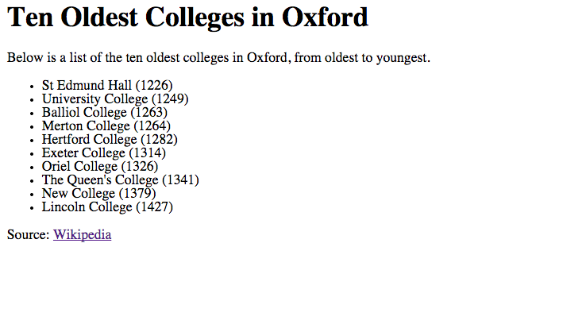
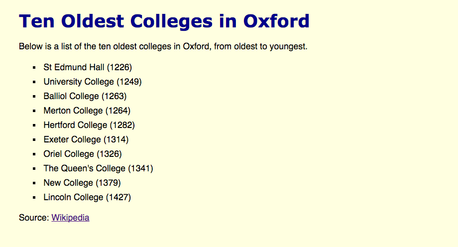

Introduction
Welcome to the second week of the course! This week we will start by looking in a bit more depth at networks function, and then will dive head first into Cascading Stylesheets (CSS). By the end of the lesson you should have:
- a better understanding of how client-server archictecture on the internet works
- an understanding of how server-side frameworks (Ruby on Rails, Python/Django, etc.) relate the coding we're doing in this course
- an understanding of how CSS selectors work, and how to write a targeted CSS selector for a part of your webpage
- experience writing your own CSS to change and improve the style of a webpage
- experience deploying a website onto the World Wide Web
Wow, big week. Let's get started!
Intro to CSS
CSS stands for Cascading Style Sheets, but you don't really need to know that. What you need to know is that CSS is what we use to control what a webpage looks like, or it's "style".
Last week we looked at HTML. HTML is used to specify a webpages content and basic layout. Recall a webpage like this:
<html>
<head>
<title>Core Web Technologies</title>
</head>
<body>
<h1>Core Technologies For Modern Websites</h1>
<ul>
<li><a href="http://en.wikipedia.org/wiki/HTML">Hypertext Markup Language (HTML)</a></li>
<li><a href="http://en.wikipedia.org/wiki/Cascading_Style_Sheets">Cascading Style Sheets</a></li>
<li><a href="http://en.wikipedia.org/wiki/JavaScript">JavaScript</a></li>
</ul>
</body>
</html>
Compared to the websites that you're used to visiting, you'll probably find the layout quite plan. You can see it in a browser here, or in the image below:
It works but it's pretty ugly. Using a new language called CSS we can add some nice styles. The first thing we do is create a new CSS file, which I'll call style.css, and link to it in our HTML document's <head> section.
<html>
<head>
<title>Core Web Technologies</title>
<link rel="stylesheet" href="style.css">
</head>
<body>
<h1>Core Technologies For Modern Websites</h1>
<ul>
<li><a href="http://en.wikipedia.org/wiki/HTML">Hypertext Markup Language (HTML)</a></li>
<li><a href="http://en.wikipedia.org/wiki/Cascading_Style_Sheets">Cascading Style Sheets</a></li>
<li><a href="http://en.wikipedia.org/wiki/JavaScript">JavaScript</a></li>
</ul>
</body>
</html>
Now in our style.css let's add a couple style rules.
h1 {
font-family: Cambria;
color: darkblue;
}
Those two lines of CSS code should change the font color and style of the <h1> header. How's our webpage look now?
While we're at it let's change a few more things:
body {
background-color: lightgrey;
}
a {
font-family: Helvetica;
}
li {
padding: 5px;
}
Before scrolling down just take a minute and think about what the webpage will look like. How do you expect it to have changed based on the above CSS rules? Ok, check it out.
With a few simple changes (changing the heading font/color, changing the background color to light grey, changing the font of the links, and adding some padding around each link) the webpage is starting to look a lot better. That's the beauty of CSS.
CSS Links
In modern websites, CSS is always written in a separate file and linked to from the <head> section of an HTML document. By default the link in the <head> section is a relative link, meaning that the filepath to the CSS file is relative to the location of the HTML file. So when you say:
<link rel="stylesheet" href="style.css">
What you're really saying is "there's a CSS file in the same folder as the HTML file, and the CSS file's name is style.css"
{kind=link}
Sometimes it's common to put your CSS files in a separate folder, to keep your working directory clean. Here is an example:
{kind=link}
In this example the style.css file is inside a folder called stylesheets. To link to the file we simple need to add the folder name to the file path:
<link rel="stylesheet" href="stylesheets/style.css">
Remember, the file path in your <link> tag is simply the relative path to the CSS file, i.e. the path to the CSS file starting from the HTML file. If you keep that simple rule in your head it is quite easy to link CSS files to HTML files no matter what the folder structure.
Finally, you might be wondering what that rel=stylesheet bit is. It's simple actually; rel is short for "relationship" - you're just specifying what the relationship is between the HTML file and the file you're linking to. In our case it's a CSS file so the relationship is "stylesheet". There are a bunch of other options as well if you're curious, although few are widely used.
Exercise 1
In this exercise we will practice applying CSS to an existing webpage. Download this folder and extract it. You should see three files: index.html, style.css, and answer.png.
{kind=link}
The goal of the exercise is to add CSS rules to style.css until index.html looks like answer.png. Currently index.html looks like this:

Some further guidance is provided below. The instructions are intentionally a little bit vague, to force you to have to search for things on the internet. I've included some suggested Google search words with each line. And remember - always write your CSS yourself! Cutting and pasting might seem easier, but in reality it's the most efficient way to learn nothing.
- add 20 pixels (
20px) of top padding and 40 pixels (40px) of left-side padding to thebodyelement. (Suggested Search Words: "CSS Padding") - make the background color light yellow (Suggested Search Words: "CSS Background Color", "CSS Color Names")
- make the
<h1>font color dark blue (Suggested Search Words: "CSS Font Color") - set the
<h1>font toVerdana(Suggested Search Words: "CSS Font Family") - set the rest of the page's font to
Helvetica - add 5px of padding to each
<li>element to space them out slightly - change the bullets on the list to be squares rather than circles (Suggested Search Words: "CSS List Bullet Style")
When you're done, the webpage should look like this:

If you happen to be working on this after class and get really stuck, you can download a folder with the answers here. However, it is really important to try this yourself for a while first.
BitBalloon
Deploying webpages onto the internet used to be very difficult. However, recently one company has made it shockingly easy. We're going to use them now to get our site online.
BitBalloon is extremely easy to use. To try them out, simply navigate to their homepage and drag your folder from the last exercise (containing style.css and index.html) into the section where it says "Drag Your Site Folder Here". You don't need to create an account or anything.
If all goes well, you should see something like this:
{kind=link}
Once you have completed this step, your website should be available online. In the example above, the website is now available at the (randomly generated) URL: publisher-ape-28114.bitballoon.com. When you use BitBalloon without a user account, the website will only be online for a limited time.
Before next week you should create a user account for BitBalloon. You can do this by creating a Github user account, and using it to log into BitBalloon. Pick your Github user name carefully, as in the programming world it's an important professional credential. (Similar to how having a good Twitter handle can be important in certain circles.)
Exercise 2
Last week you made a simple website listing things you like. This week it's time to add some style!
- Use your new CSS skills to add some flair to your website. Edit the colors and fonts, and also search around on the internet for other ideas that you haven't seen yet in this lesson. Be creative.
- Deploy your website to BitBalloon by dragging its entire folder into their upload interface, as shown in the previous section.
- Ask your neighbour to use their computer to verify that your BitBalloon website works.
- Congratulations: you've just put your first website onto the internet! High-five someone!!!
CSS Selectors
Element Selectors
One of the trickiest things in CSS are "selectors". CSS consists of two components: selectors and rules. For instance, in the following code:
p {
color: red;
}
p is the selector, and color: red; is the rule. What this rule is saying is "for all paragraphs (p) in the HTML document, make the font color red (color: red;)." This kind of simple selector is known as an element selector.
Class Selectors
What is we had a webpage where we had multiple paragraphs, but we only wanted to color one of them red?
<html>
<head>
<link rel="stylesheet" href="style.css">
<title>My Awesome Page</title>
</head>
<body>
<h1>Example Page</h1>
<p>The first paragraph is pretty normal.</p>
<p>Warning! The second paragraph is not normal.</p>
<p>The third paragraph is normal.</p>
</body>
</html>
If we apply the CSS rule of color: red; using the CSS selector p we will color all paragraphs red - not what we want. Instead we need to use what's known as an HTML class.
<html>
<head>
<link rel="stylesheet" href="style.css">
<title>My Awesome Page</title>
</head>
<body>
<h1>Example Page</h1>
<p>The first paragraph is pretty normal.</p>
<p class="warning">Warning! The second paragraph is not normal.</p>
<p>The third paragraph is normal.</p>
</body>
</html>
Notice that the second paragraph now has class="warning" added inside its HTML tag. To apply the red color only to this paragraph, we simply need to use a class selector.
.warning {
color: red;
}
Notice that class selectors always start with a dot (.warning). The beauty of class selectors is that we can re-use them throughout our HTML document.
<html>
<head>
<link rel="stylesheet" href="style.css">
<title>My Awesome Page</title>
</head>
<body>
<h1>Example Page</h1>
<p>All is well with the world.</p>
<p class="warning">Warning! Maybe it's not.</p>
<p>No, I think it actually is.</p>
<p class="warning">Wait, no, WARNING. It's totally not.</p>
<p>Let's end on a good note... all is well.</p>
</body>
</html>
Notice in this instance that we can re-use the same CSS rule twice by simply applying "class="warning"" to every paragraph which we want to display in red.
Alright, I admit it: I didn't finish this section yet. While you're at it do a quick online search for "ID selectors" and "nested selectors". Or, better yet, try the CSS Selector Game. We'll talk more about selectors next week!
Feedback
Every week it would be fantastic to get some anonymous feedback to help make this course better. If you have a moment, please put something in here and press submit!
Please don't forget to tell us what else you would like to be learning!
Homework
Essential
- Complete project 2 on General Assembly Dash.
- Try your hand at the CSS Selectors Game. It might be a bit too advanced for you to finish all of the levels (prove me wrong!) but see if you can get through the first 10 levels.
Bonus
- Read Joel Spolsky's absolute classic The Iceberg Secret Revealed, on the relationship between technical and non-technical managers. Quoting: It's pretty clear that programmers think in one language, and MBAs think in another. I've been thinking about the problem of communication in software management for a while, because it's pretty clear to me that the power and rewards accrue to those rare individuals who know how to translate between Programmerese and MBAese. Enough said - give it a read!